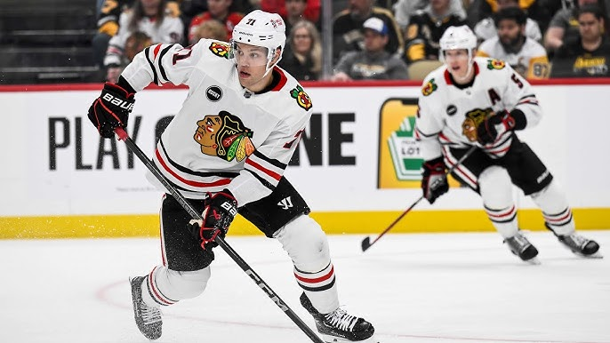

O jogador pode estar de volta à escalação dos Blackhawks mais rápido do que o previsto originalmente.

Depois que o jogador do Chicago Blackhawks saiu de sua última derrota, contra o Boston Bruins, com uma lesão na parte superior do corpo, o técnico Luke Richardson indicou que a recuperação do veterano extremo seria de “semana a semana”.
No entanto, Hall teve um participante limitado nos treinos de sexta-feira e, embora Richardson tenha dito que Hall não jogará no sábado contra o Montreal, o jogador de 31 anos agora está sendo considerado no dia a dia.
Quando estiver saudável, Hall deverá retomar seu papel na linha de frente ao lado de Connor Bedard.